The Web Is Dead!
Long Live The Web!
Sam Thorogood @samthor
Mobile Happened
- "There's an app for that"—native capabilities have made apps sexy
- Mobile has easily overtaken desktop
ZERO
apps installed per month
…
ONE
app installed per month
78%
of time is spent in a users' top three apps


So if
- You are developing something
- ... for other humans to consume (e.g. "content")
- ... for other humans to use (e.g. "app")
The web is
- The most open platform we have
- The easiest way to share with anyone
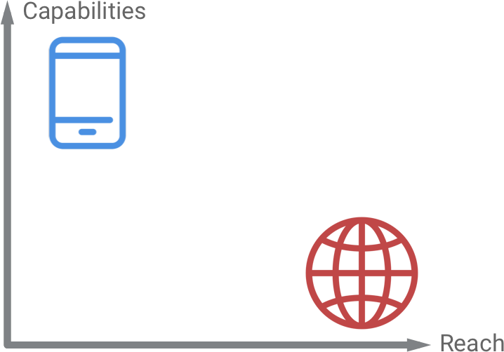
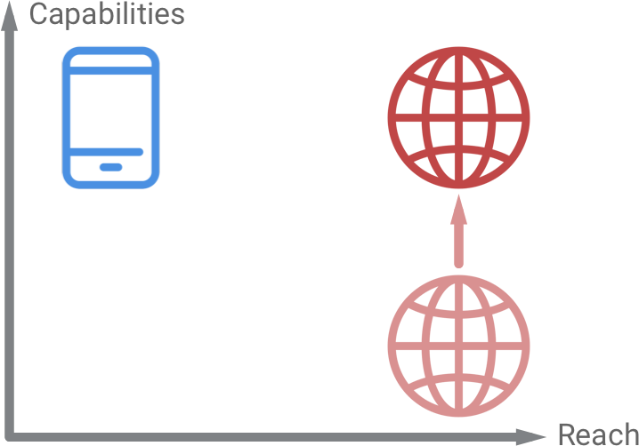
Build Better Websites
- Capabilities have caught up with reach
- Evergreen browsers provide a great base
What's Old Is New Again
- ... when rounded down, no-one wants to install your native app
- ... URLs still mean something
- ... the Web is not dead
Sam Thorogood
- Developer Programs Engineer at Google 🤷🏻♂️
Projects
- YouTube videos, blog posts
- Misc web polyfills—
dialog, inert
- Emojityper.com
- …
Sam Thorogood

- Developer Programs Engineer at Google 🤷🏻♂️
Projects
- YouTube videos, blog posts
- Misc web polyfills—
dialog, inert
- Emojityper.com
- …
Santa Tracker

Santa Tracker
Progressive Web Apps
- We just made this phrase up
- Web experiences with app-like features—…what are app-like features?
Service Worker
- PWAs are made possible by Service Worker
- Supported on Chrome, Firefox, Edge (soon™) and Safari (soon™)
- Singleton scritpt which outlives your site
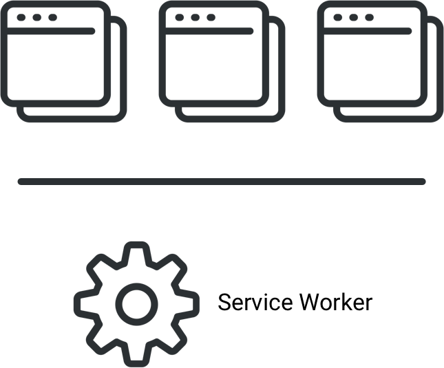
🔥
Fast
Integrated
Reliable
Engaging
Fast
20-50%
of users will abandon your site after 3s loading
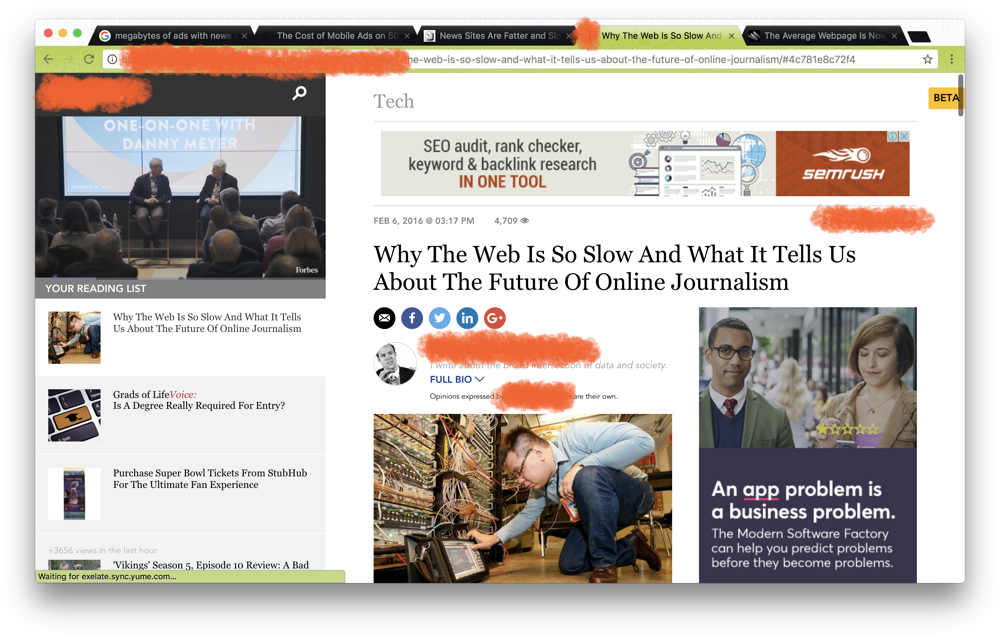
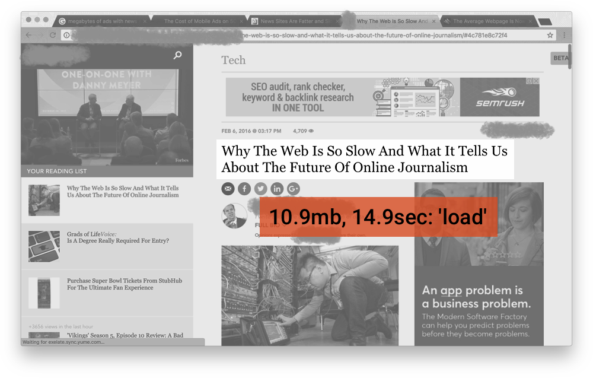

Integrated
- Launch from Home Screen
- Visible in task list
- Access to native hardware via APIs
Webapps? On my Home Screen?
- iOS famously pioneered then ignored this
- We say "Add to Home Screen", but really mean "prompt to ..."
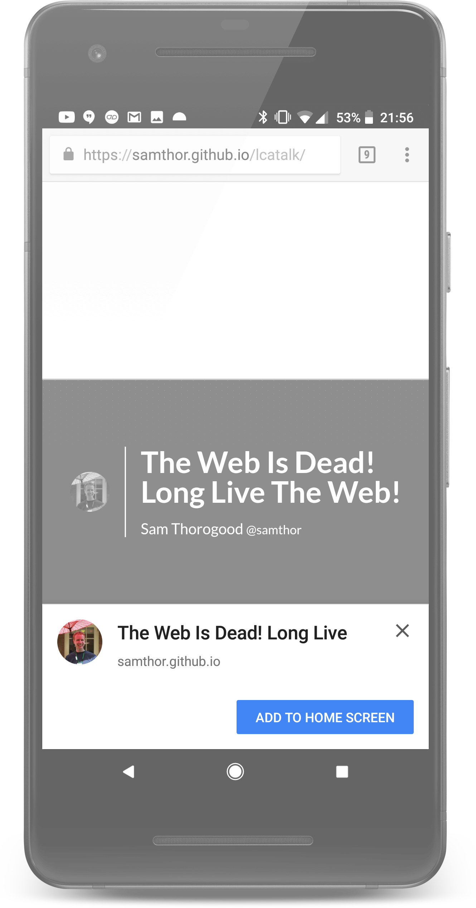
Webapps? On my Home Screen?
- iOS famously pioneered then ignored this
- We say "Add to Home Screen", but really mean "prompt to ..."
Web App Manifest
{
"name": "The Web Is Dead! Long Live The Web!",
"short_name": "Web 💀👑",
"icons": [
{"src": "icon-256.png", "sizes": "256x256"}
],
"display": "standalone",
"start_url": "/",
"orientation": "landscape",
"theme_color": "#36474f",
"background_color": "#fff"
}
Web App Manifest
{
"name": "The Web Is Dead! Long Live The Web!",
"short_name": "Web 💀👑",
"icons": [
{"src": "icon-256.png", "sizes": "256x256"}
],
"display": "standalone",
"start_url": "/",
"orientation": "landscape",
"theme_color": "#36474f",
"background_color": "#fff"
}
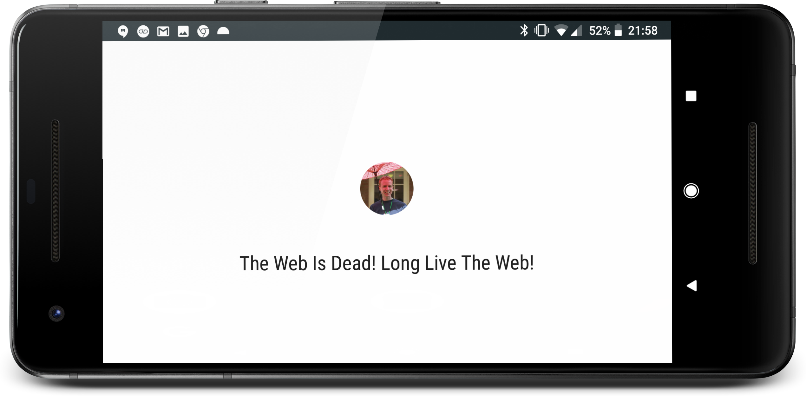
Web App Manifest
{
"name": "The Web Is Dead! Long Live The Web!",
"short_name": "Web 💀👑",
"icons": [
{"src": "icon-256.png", "sizes": "256x256"}
],
"display": "standalone",
"start_url": "/",
"orientation": "landscape",
"theme_color": "#36474f",
"background_color": "#fff"
}
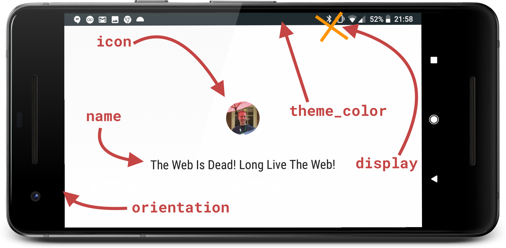
Integrated also means
- Using modern APIs where possible
- e.g., Payment Request API, Media APIs, ...
- Not everything is here yet
Reliable
- The Service Worker lets us handle network requests
- This is a JS file, which—
- Can proxy all network requests made by your site
- Gets installed after a user first loads your page
Install a Service Worker
<!-- index.html -->
<script>
navigator.serviceWorker.register('/service-worker.js').then(() => {
console.info('yay!');
});
</script>
Basic Service Worker
// service-worker.js
self.addEventListener('fetch', (event) => {
if (event.request.url === `https://yoursite.com/cached.html`) {
event.respondWith(new Response(…));
} else {
event.respondWith(fetch(event.request));
}
});
Real Service Worker
// service-worker.js
self.addEventListener('install', (event) => {
event.waitUntil(
self.caches.open('lcatalk').then((cache) => {
return cache.addAll(['/', '/code.js', …]);
});
);
});
self.addEventListener('fetch', (event) => {
if (event.request.url === `https://yoursite.com/`) {
…
Real Service Worker
self.caches.open('lcatalk').then((cache) => {
return cache.addAll(['/', '/code.js', …]);
});
);
});
self.addEventListener('fetch', (event) => {
event.respondWith(self.caches.open('lcatalk')
.then((cache) => cache.match(event.request))
.then((response) => response || fetch(event.request))
)
});
Imperative
- The Service Worker is an imperative script—it can proxy requests in any way
- Via the network
- Via a cache
- By racing the two requests
- Generating a dynamic/fake response—think stub images
Strategies
- Can cache everything (simple static site)
- Can cache core HTML, assets etc, load articles at runtime (news sites)
- Cache some, indicate what's missing (wikis)
- Generate new HTML as requested
This site works offline
Demo time!—Load the /foo handler—and open DevTools
Engaging

- Native Push Notifications
- ...even when your site isn't open
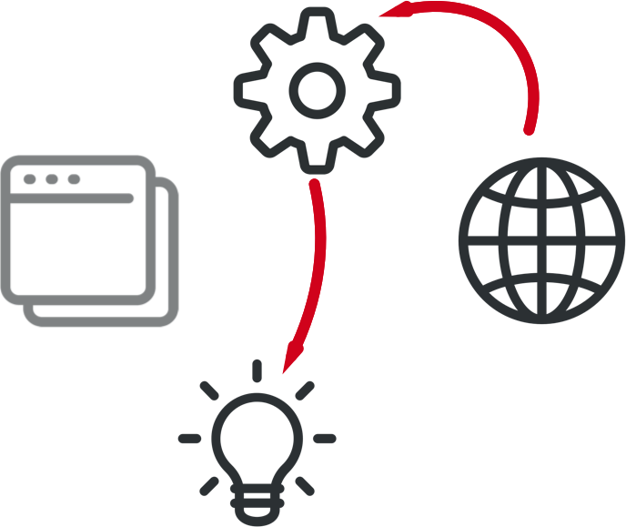
Handling remote push
self.addEventListener('push', (event) => {
self.registration.showNotification('So engaging', {
body: '🤔💭',
…
});
});
Setting up push
/* snipped for brevity */
/* Search for "Web Push Notifications" and open Google Developers */
/* It involves a small amount of encryption */
Push Notifications
- They should be:
- Timeley
- Precise
- Relevant
- Bonus: Actionable
... but every site asks for it
- We're not happy either
- Please don't do this
- Acceptance rate is much, much lower than when based on a user action (e.g., button click "Notify me")
The web can do what?!
Media APIs
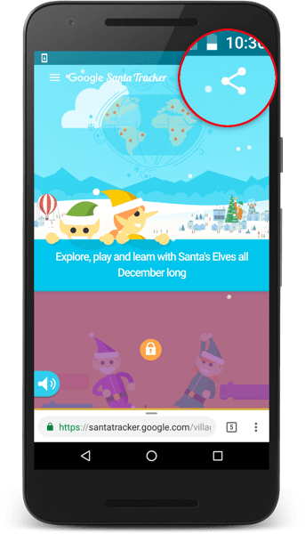
Web Share
- Trigger the Android native share intent
- Future work: act as share reciever
Web Payments API
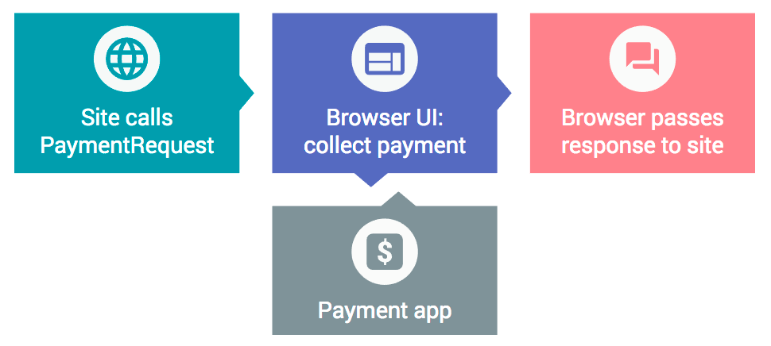
Other Native APIs
- Geolocation—and use geoIP
- WebGL
- WebUSB
- Web Bluetooth
- Web Audio
- Background Sync
- ...
Finally...
Santa Tracker
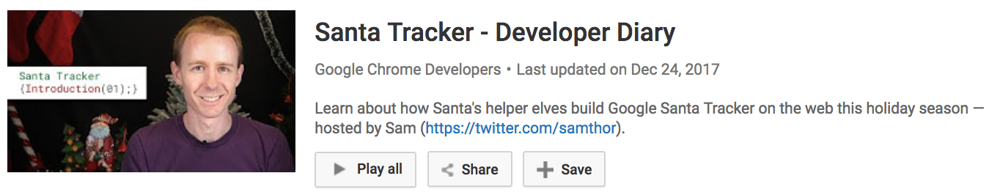
More Resources
Thanks
Sam Thorogood @samthor